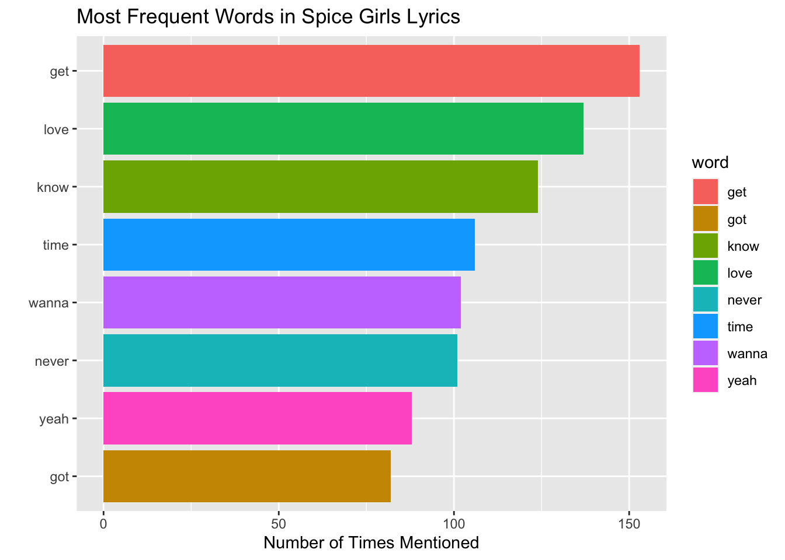
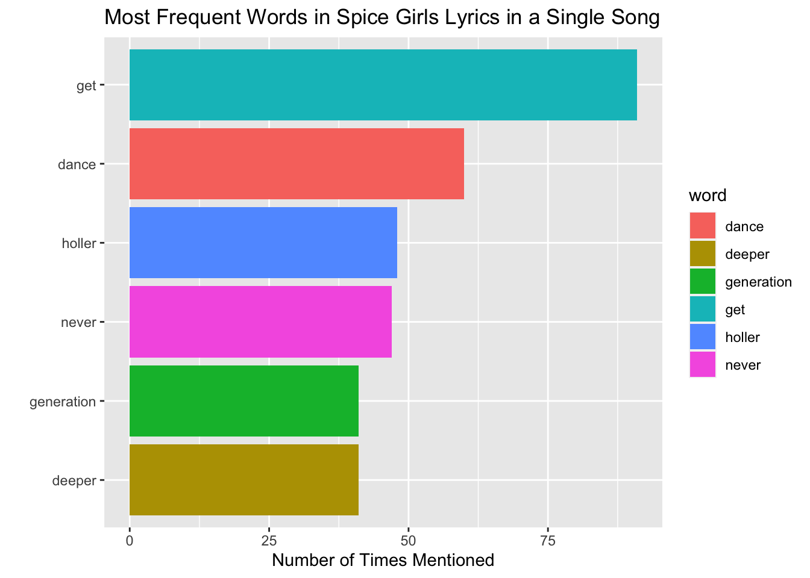
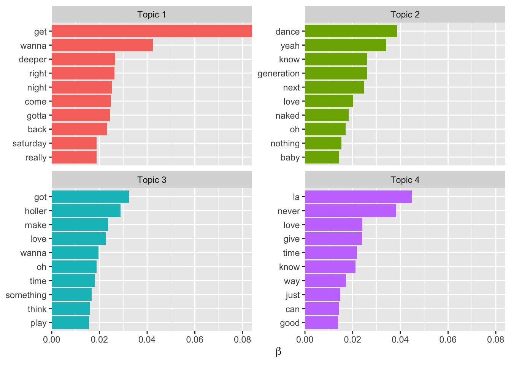
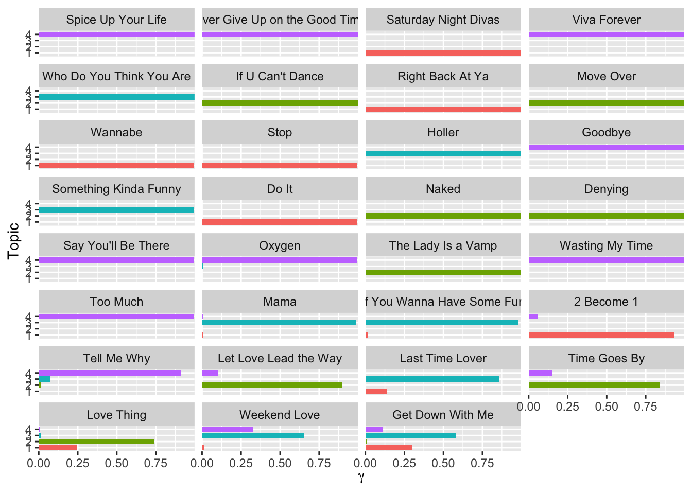

knitr::opts_chunk$set(error=FALSE,
message= FALSE,
warning=FALSE)This post is my reproduction of Julia Silge’s blogpost Topic Modeling for #TidyTuesday Spice Girls Lyrics, with some added inspiration from a blogpost by Ariane Aumaitre called Tutorial: Text analysis and data visualization with Taylor Swift songs.

1. Set Up
For this post I used the following packages:
tidyverse:
readr: to use
read_csv()magrittr: to pipe
%>%dplyr: to manipulate data with
distinct(),mutate(),anti_join(),group_by(),summarise(),arrange(),count(),filter(),slice_max(),ungroup()stringr: to use
str_replace()ggplot2: to make data visuals with
ggplot()
tidytext: to use
unnest_tokens(),get_stopwords(),cast_sparse(),tidy(),reorder_within(),scale_y_reordered()stm: to use
stm()(Structural Topic Model), andestimateEffect()
library(tidyverse)
library(tidytext)
library(stm)And looking at data of Spice Girls lyrics:
lyrics <- read_csv("https://raw.githubusercontent.com/rfordatascience/tidytuesday/master/data/2021/2021-12-14/lyrics.csv")
utils::head(lyrics, 5)# A tibble: 5 × 9
artist_name album_name track_n…¹ song_id song_…² line_…³ secti…⁴ line secti…⁵
<chr> <chr> <dbl> <dbl> <chr> <dbl> <chr> <chr> <chr>
1 Spice Girls Spice 1 89740 Wannabe 1 Intro Haha… Scary,…
2 Spice Girls Spice 1 89740 Wannabe 2 Intro Yo, … Scary,…
3 Spice Girls Spice 1 89740 Wannabe 3 Intro So t… Scary,…
4 Spice Girls Spice 1 89740 Wannabe 4 Intro I'll… Scary,…
5 Spice Girls Spice 1 89740 Wannabe 5 Intro So t… Scary,…
# … with abbreviated variable names ¹track_number, ²song_name, ³line_number,
# ⁴section_name, ⁵section_artistlyrics %>% dplyr::distinct(album_name, song_name)# A tibble: 31 × 2
album_name song_name
<chr> <chr>
1 Spice "Wannabe"
2 Spice "Say You\x92ll Be There"
3 Spice "2 Become 1"
4 Spice "Love Thing"
5 Spice "Last Time Lover"
6 Spice "Mama"
7 Spice "Who Do You Think You Are"
8 Spice "Something Kinda Funny"
9 Spice "Naked"
10 Spice "If U Can\x92t Dance"
# … with 21 more rows2. Tidy
Change
\x92to ’Split words in line column into tokens
Anti-Join each word into it’s own row
tidy_lyrics <-
lyrics %>%
dplyr::mutate(song_name = stringr::str_replace_all(song_name, "\x92", "'")) %>%
tidytext::unnest_tokens(word, line) %>%
dplyr::anti_join(tidytext::get_stopwords())
tidy_lyrics# A tibble: 6,663 × 9
artist_name album_name track_…¹ song_id song_…² line_…³ secti…⁴ secti…⁵ word
<chr> <chr> <dbl> <dbl> <chr> <dbl> <chr> <chr> <chr>
1 Spice Girls Spice 1 89740 Wannabe 1 Intro Scary,… haha…
2 Spice Girls Spice 1 89740 Wannabe 2 Intro Scary,… yo
3 Spice Girls Spice 1 89740 Wannabe 2 Intro Scary,… tell
4 Spice Girls Spice 1 89740 Wannabe 2 Intro Scary,… want
5 Spice Girls Spice 1 89740 Wannabe 2 Intro Scary,… real…
6 Spice Girls Spice 1 89740 Wannabe 2 Intro Scary,… real…
7 Spice Girls Spice 1 89740 Wannabe 2 Intro Scary,… want
8 Spice Girls Spice 1 89740 Wannabe 3 Intro Scary,… tell
9 Spice Girls Spice 1 89740 Wannabe 3 Intro Scary,… want
10 Spice Girls Spice 1 89740 Wannabe 3 Intro Scary,… real…
# … with 6,653 more rows, and abbreviated variable names ¹track_number,
# ²song_name, ³line_number, ⁴section_name, ⁵section_artist3. Most Common Words
tidy_lyrics %>%
dplyr::group_by(word) %>%
dplyr::summarise(n = n()) %>%
dplyr::arrange(-n)# A tibble: 979 × 2
word n
<chr> <int>
1 get 153
2 love 137
3 know 124
4 time 106
5 wanna 102
6 never 101
7 oh 88
8 yeah 88
9 la 85
10 got 82
# … with 969 more rowsShort Way
tidy_lyrics %>%
dplyr::count(word, sort = TRUE)# A tibble: 979 × 2
word n
<chr> <int>
1 get 153
2 love 137
3 know 124
4 time 106
5 wanna 102
6 never 101
7 oh 88
8 yeah 88
9 la 85
10 got 82
# … with 969 more rowstidy_lyrics %>%
dplyr::count(word, sort = TRUE) %>%
dplyr::filter(n > 80,
word != "la",
word != "oh") %>%
ggplot2::ggplot(aes(x = n, y = reorder(word, n), fill = word)) +
ggplot2::geom_col() +
ggplot2::labs(y = "",
x = "Number of Times Mentioned",
title = "Most Frequent Words in Spice Girls Lyrics")
4. Most Common Word Per Song
tidy_lyrics %>%
dplyr::count(song_name, word, sort = TRUE)# A tibble: 2,206 × 3
song_name word n
<chr> <chr> <int>
1 Saturday Night Divas get 91
2 Spice Up Your Life la 64
3 If U Can't Dance dance 60
4 Holler holler 48
5 Never Give Up on the Good Times never 47
6 Move Over generation 41
7 Saturday Night Divas deeper 41
8 Move Over yeah 39
9 Something Kinda Funny got 39
10 Never Give Up on the Good Times give 38
# … with 2,196 more rowstidy_lyrics %>%
dplyr::count(song_name, word, sort = TRUE) %>%
dplyr::filter(n >40,
word != "la") %>%
ggplot2::ggplot(aes(x = n, y = reorder(word, n), fill = word)) +
ggplot2::geom_col() +
ggplot2::labs(y = "",
x = "Number of Times Mentioned",
title = "Most Frequent Words in Spice Girls Lyrics in a Single Song") 
5. Train a Topic Model
(Analyze text data to determine cluster words)
lyrics_sparse <-
tidy_lyrics %>%
dplyr::count(song_name, word) %>%
tidytext::cast_sparse(song_name, word, n)
base::dim(lyrics_sparse)[1] 31 979This means there are 31 songs (i.e. documents) and 979 different tokens (i.e. terms or words) in our data set for modeling.
“The most important parameter when training a topic modeling is K, the number of topics. This is like k in k-means in that it is a hyper parameter of the model and we must choose this value ahead of time. We could try to multiple different values to find the best value for K, but this is a very small data set so let’s just stick with K = 4.”
base::set.seed(123)
topic_model <- stm::stm(lyrics_sparse, K = 4, verbose = FALSE)
base::summary(topic_model)A topic model with 4 topics, 31 documents and a 979 word dictionary.Topic 1 Top Words:
Highest Prob: get, wanna, deeper, right, night, come, gotta
FREX: deeper, saturday, get, comin, back, night, ya
Lift: jump, party's, body, another, anyway, blameless, breaking
Score: deeper, saturday, get, night, comin, arms, wanna
Topic 2 Top Words:
Highest Prob: dance, yeah, know, generation, next, love, naked
FREX: next, naked, denying, foolin, nobody, wants, lead
Lift: foolin, nobody, question, next, admit, bein, check
Score: next, dance, naked, generation, denying, colour, foolin
Topic 3 Top Words:
Highest Prob: got, holler, make, love, wanna, oh, time
FREX: holler, kinda, swing, funny, yay, use, driving
Lift: anyone, driving, fantasy, oller, blow, nudge, unwind
Score: holler, swing, kinda, funny, yay, ashamed, loving
Topic 4 Top Words:
Highest Prob: la, never, love, give, time, know, way
FREX: times, swear, la, bring, promise, viva, tried
Lift: aggravation, angel, dreamt, heaven, letting, revelation, sent
Score: la, times, aha, swear, chicas, front, havin 6. Explore Topic Model Results
word_topics <- tidytext::tidy(topic_model, matrix = "beta")
word_topics # A tibble: 3,916 × 3
topic term beta
<int> <chr> <dbl>
1 1 achieve 1.94e- 3
2 2 achieve 8.51e-29
3 3 achieve 1.00e-25
4 4 achieve 9.51e-19
5 1 baby 1.38e- 2
6 2 baby 1.44e- 2
7 3 baby 1.28e- 3
8 4 baby 4.16e- 3
9 1 back 2.31e- 2
10 2 back 5.44e- 4
# … with 3,906 more rows7. Visualization
word_topics %>%
dplyr::group_by(topic) %>%
dplyr::slice_max(beta, n = 10) %>%
dplyr::ungroup() %>%
dplyr::mutate(topic = paste("Topic", topic)) %>%
ggplot2::ggplot(ggplot2::aes(beta,
tidytext::reorder_within(term,
beta,
topic),
fill = topic)) +
ggplot2::geom_col(show.legend = FALSE) +
ggplot2::facet_wrap(vars(topic), scales = "free_y") +
ggplot2::scale_x_continuous(expand = c(0, 0)) +
tidytext::scale_y_reordered() +
ggplot2::labs(x = base::expression(beta), y = NULL)
Gamma Matrix
song_topics <- tidytext::tidy(topic_model,
matrix = "gamma",
document_names = base::rownames(lyrics_sparse)
)
song_topics# A tibble: 124 × 3
document topic gamma
<chr> <int> <dbl>
1 2 Become 1 1 0.932
2 Denying 1 0.00154
3 Do It 1 0.996
4 Get Down With Me 1 0.300
5 Goodbye 1 0.000971
6 Holler 1 0.00155
7 If U Can't Dance 1 0.000896
8 If You Wanna Have Some Fun 1 0.0171
9 Last Time Lover 1 0.140
10 Let Love Lead the Way 1 0.00178
# … with 114 more rowssong_topics %>%
dplyr::mutate(
song_name = fct_reorder(document, gamma),
topic = base::factor(topic)
) %>%
ggplot2::ggplot(ggplot2::aes(gamma, topic, fill = topic)) +
ggplot2::geom_col(show.legend = FALSE) +
ggplot2::facet_wrap(vars(song_name), ncol = 4) +
ggplot2::scale_x_continuous(expand = c(0, 0)) +
ggplot2::labs(x = base::expression(gamma), y = "Topic")
8. Estimate Regression
effects <-
stm::estimateEffect(
1:4 ~ album_name,
topic_model,
tidy_lyrics %>% distinct(song_name, album_name) %>% dplyr::arrange(song_name)
)
base::summary(effects)
Call:
stm::estimateEffect(formula = 1:4 ~ album_name, stmobj = topic_model,
metadata = tidy_lyrics %>% distinct(song_name, album_name) %>%
dplyr::arrange(song_name))
Topic 1:
Coefficients:
Estimate Std. Error t value Pr(>|t|)
(Intercept) 0.14061 0.12301 1.143 0.263
album_nameSpice 0.09258 0.17701 0.523 0.605
album_nameSpiceworld 0.15105 0.17327 0.872 0.391
Topic 2:
Coefficients:
Estimate Std. Error t value Pr(>|t|)
(Intercept) 0.1471 0.1327 1.109 0.277
album_nameSpice 0.1327 0.1887 0.703 0.488
album_nameSpiceworld 0.1472 0.1851 0.795 0.433
Topic 3:
Coefficients:
Estimate Std. Error t value Pr(>|t|)
(Intercept) 0.29480 0.12114 2.434 0.0216 *
album_nameSpice 0.07952 0.17174 0.463 0.6470
album_nameSpiceworld -0.28112 0.16919 -1.662 0.1078
---
Signif. codes: 0 '***' 0.001 '**' 0.01 '*' 0.05 '.' 0.1 ' ' 1
Topic 4:
Coefficients:
Estimate Std. Error t value Pr(>|t|)
(Intercept) 0.41760 0.13938 2.996 0.00567 **
album_nameSpice -0.30293 0.19793 -1.531 0.13711
album_nameSpiceworld -0.01948 0.19352 -0.101 0.92053
---
Signif. codes: 0 '***' 0.001 '**' 0.01 '*' 0.05 '.' 0.1 ' ' 1